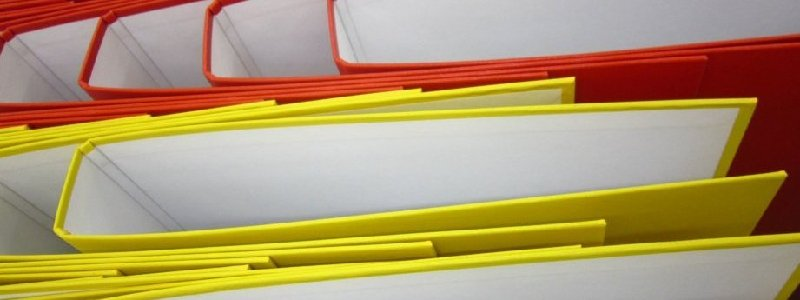
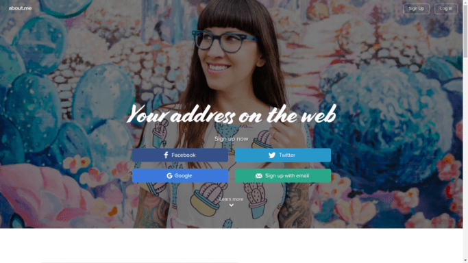
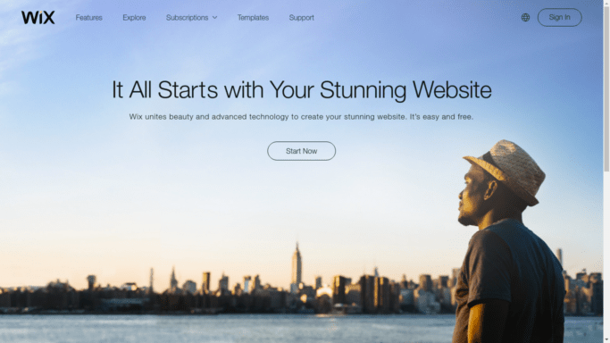
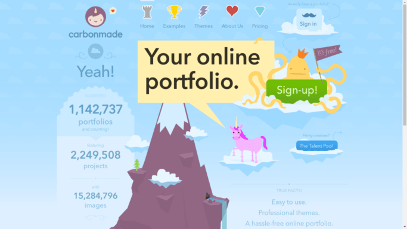
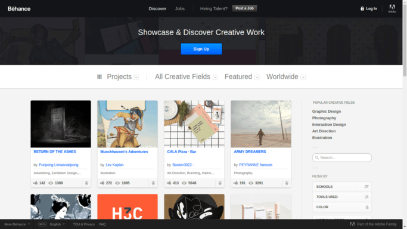
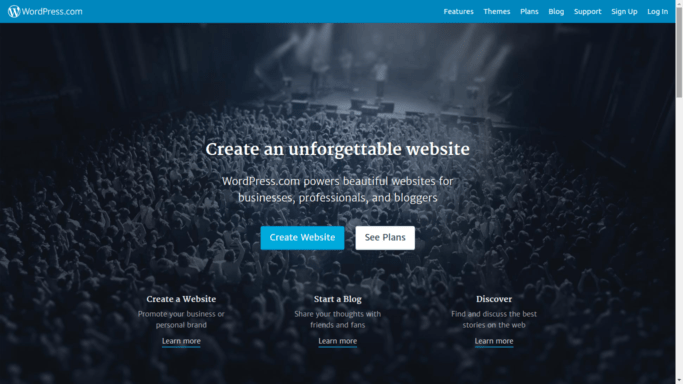
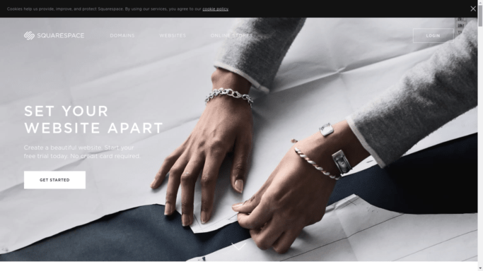

Всеки може (и трябва) да има портфолио! Идеи
Дизайнерите имат папка, или в наши дни по- скоро уеб страница, с илюстрации и продукти, които са създали.
Писателите имат списък със статии или книги.
Уеб разработчиците могат да ви покажат сайтовете, които са направили.
Но портфолиото не е само за артистичните професии, а и за всички останали. Всеки има проекти, по които е работил, дори и да са "извънкласни".
Дори ако не сте фрийлансър, а работите в компания.
Ако се стремите към кариера, а не просто работа, ви трябва портфолио!
Но ще кажете, че няма как да изложите визуално работата, която вършите.
Какво да включим в портфолиото си
Няма страшно! Ето какво може да включите тогава в портфолиото си:
- автобиография: с графики, проценти;
- казуси: опишете по какъв проект сте работили и какъв резултат сте постигнали;
- лична философия: какво прави работата с вас по- различна и по- специална, какво се стремите да постигнете в света и какво никога не бихте позволили- тук е идеалното място да изтъкнете професионалните си качества (комуникация, спазване на срокове);
- опишете как работите или така наречения си работен процес, за да може клиента ви да си представи какво следва след като ви наемат;
- в тази връзка приложете скици или снимки от процеса при брейнсторминг например (включително хвърчащи листчета, диаграми, бели дъски или как изглеждате докато обсъждате с клиенти и колеги), работното ви място, вие на конференция или изнасяйки презентация (между другото имате ли слайдове от тези събития- сложете ги в порфолиото си);
- презентации, които сте изнасяли (може да споделите слайдове, видео или снимки от сцената), защото ви позиционират като експерт;
- доклади или научни разработки; или...
- събития, на които сте присъствали, защото показват, че следите развитието на бранша и се усъвършенстват непрекъснато.
Не слагайте всичко, а само най- доброто
Има две нагласи при представяне на каквато и да е информация: куриране и трупане.
Кураторите, може и да знаете, са работниците в музея, които избират какво да покажат на посетителите. Например, по което и да е време, в Лувъра са изложени едва 5% от колекцията му. Творбите се сменят в зависимост от темата, която се разглежда в настоящата изложба. Това води до консистентност и приятно изглеждащи зали.
А виждали ли сте по телевизията тези вещомани, чиито роднини трябва да носят маски, защото къщите им са претъпкани догоре с боклуци.
Кой искате да сте вие? Мисля, че е лесно да изберете.
Използвайте преценката си! По- добре да имате 10 качествени демото на работата ви, отколкото сто упражнения или образци, с които не сте горди. Ако не бихте го предали на клиент, елиминирайте го!
Обмислете дали да не направите няколко версии в зависимост от конкретната дейност.
Дизайнерите може да имат секция за брандинг и друга за илюстрации за списания например. Адвокатите може да се занимават с регистрация на фирми, както и с изготвяне на договори като в различните случаи клиента трябва да дойде с различна нагласа, документация и информация.
Дайте предимство на типа творби, по които искате да работите повече занапред.
Внимание
Ако случайно сте хванали в кадър поверителен документ, махнете го или замажете тази част.
Ако не сте сигурни дали може да споделите нещо, питайте!
Уверете се, че имате право да споделяте върху какво сте работили. Да получите съгласието на клиента (или работодателя ви) също може да е чудесен повод да се информирате как върви при тях и дори да получите ново задание. Всички печелят! Дори може да ги попитате за отзив, който да включите в портфолиото си, защото няма нищо вдъхващо повече доверие от доволни клиенти.
Нямате какво да сложите в портфолиото си :(
Ако сменяте кариерата или нямате работа, която да покажете, измислете си проект и опишете как ще се справите с него.
Вземете съществуващ уебсайт, от който има какво да се желае, и го преработете според разбиранията си. (Бонус точки, ако го пратите на собственика на сайта.)
Изберете нов продукт и направете маркетинг план, който бихте следвали ако бяхте натоварени с промотирането му.
Напишете статия по теми, които ви интересуват, ако сте копирайтър, дори никой да не ви я е поръчал.
Как бихте могли да покажете знания и умения в избраната област?
Друг вариант е да покажете инициатива като измислите свои си проект. Не е нужно да е грандиозен, но е добре да е в посоката, в която сте се насочили.
Платформата
Супер, убедени сте, че ви е нужно портфолио!
Готови сте да построите своето, но се чудите от къде да започнете?
Сайтовете по- долу са чудесна отправна точка:
- about.me: място специално направено, за да покажете себе си и прекрасната работа, която вършите лесно и кратко. 
- Wix: помага ви да направите модерен уебсайт просто като влачите файловете и текста си плюс 500MB безплатно. За целите ни, се доплаща само ако искате свой домейн или да премахнете рекламите. 
- Carbonmade: подходящ за модни дизайнери, фотографи, архитекти, копирайтъри и други професионалисти, този специално направен за портфолиа сайт се отличава със симпатичен дизайн и красиви теми, които да използвате. 
- Behance: този сайт е насочен най- вече към дизайнерите, но може да ви предложи вдъхновение как да направите своя, защото може да видите последните тенденции. 
- WordPress: ако сте мислели сериозно за сайт, сигурно сте чували, че е добре да имате хостинг с инсталиран wordpress, но знаете ли че може да си направите блог с доста приставки, приютен на техния поддомейн, а срещу определена сума може да персонализирате изгледа. Когато сте готови за следващата стъпка, всичко качено може да се свали като архив, а интерфейса ще ви е вече познат и следователно ще се ориентирате много по- бързо в новия си мощен уебсайт. 
- Squarespace: най- лесния начин да си направите сайт, но срещу цена. Ако сте готови да инвестирате вече, изберете тази опция! 
- Slideshare: друг вариант е да съберете постиженията си в презентация, а най- подходящо е да я качите на сайта, който предлага най- лесно свързване с LinkedIn.
Помислете дали да не създадете pdf документ, който мениджърите или наемащите да могат да свалят, за да разгледат подробно в удобно за тях време.
Най- вероятно портфолиото ви трябва, за да го приложите към кандидатурата си. Но ако мислите, че някой ще открие случайно сайта ви, знайте, че е малко вероятно. Затова вашата задача (ако решите да я приемете!) е да споделите портфолиото си в социалните медии. Никога не знаете кой се нуждае точно от вашите услуги!
И най- важно: кажете им как да се свържат с вас. Поиграйте си да сложите контактна форма, напишете имейл адреса или потребителското си има в twitter, ако го ползвате. Направете страничка наречена "Наемете ме". Защо не?
И не забравяйте да актуализирате редовно портфолиото си, за да отразява работата, която се стремите да вършите занапред!